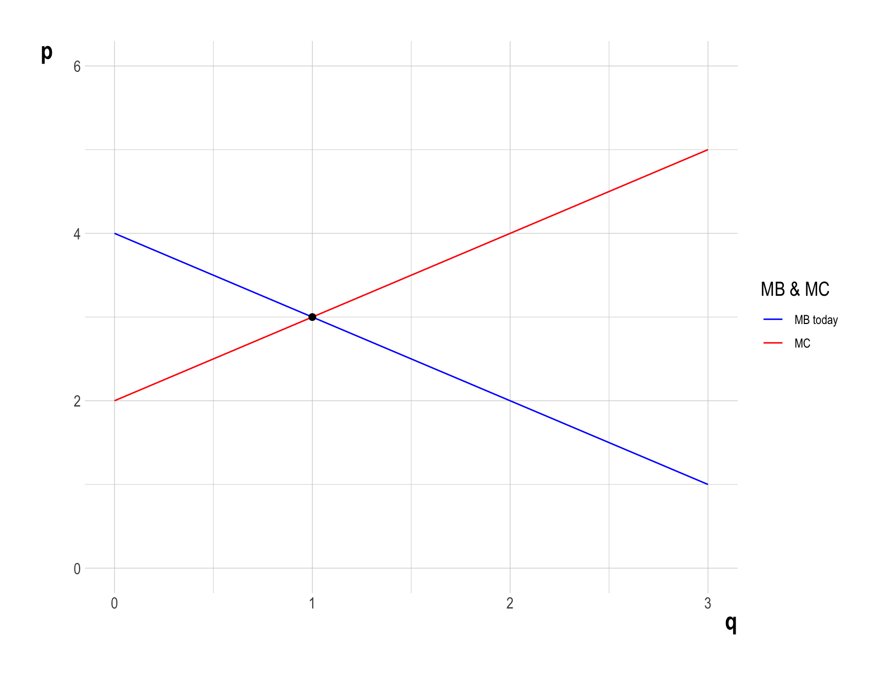
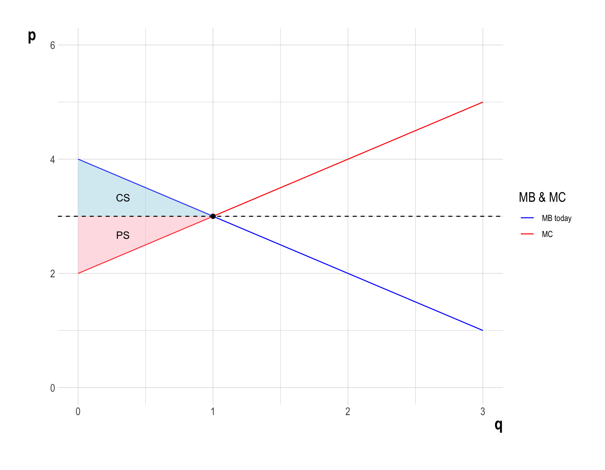
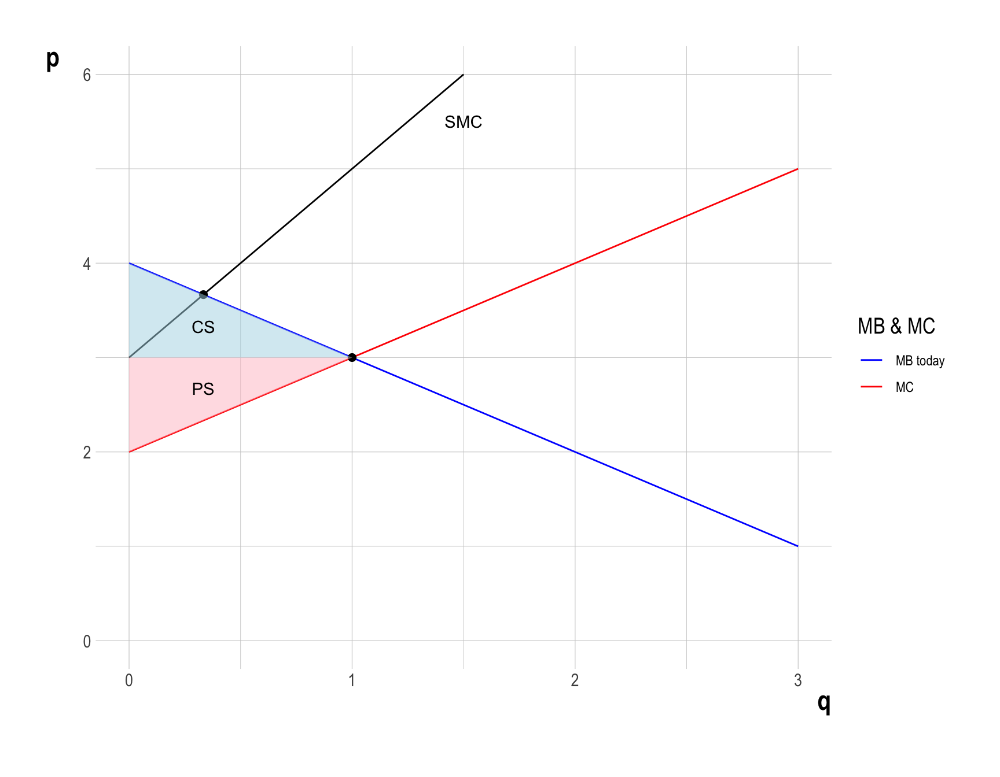
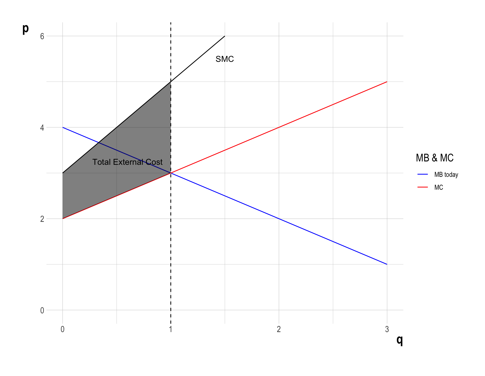
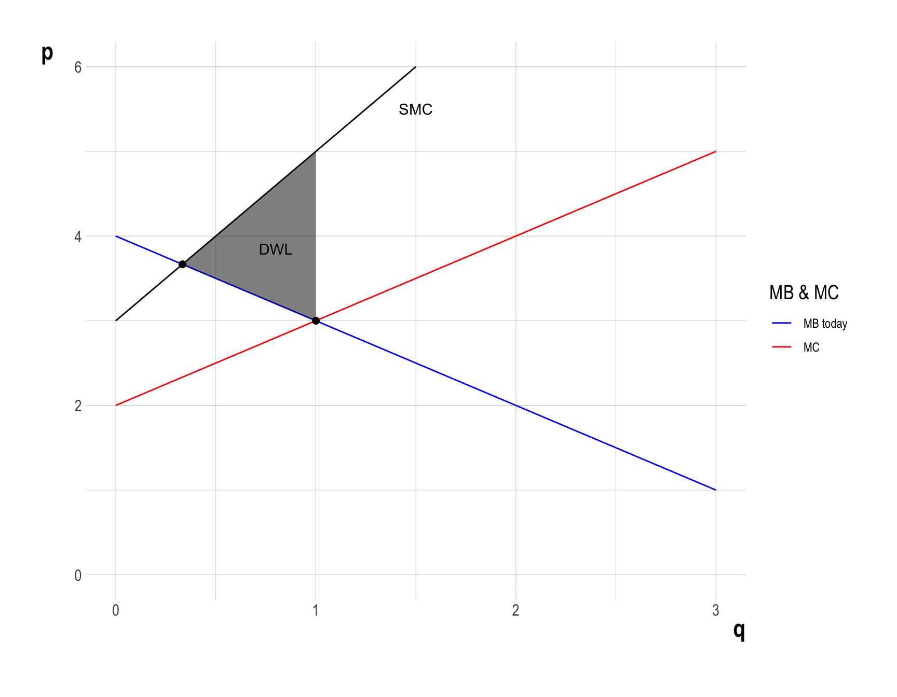
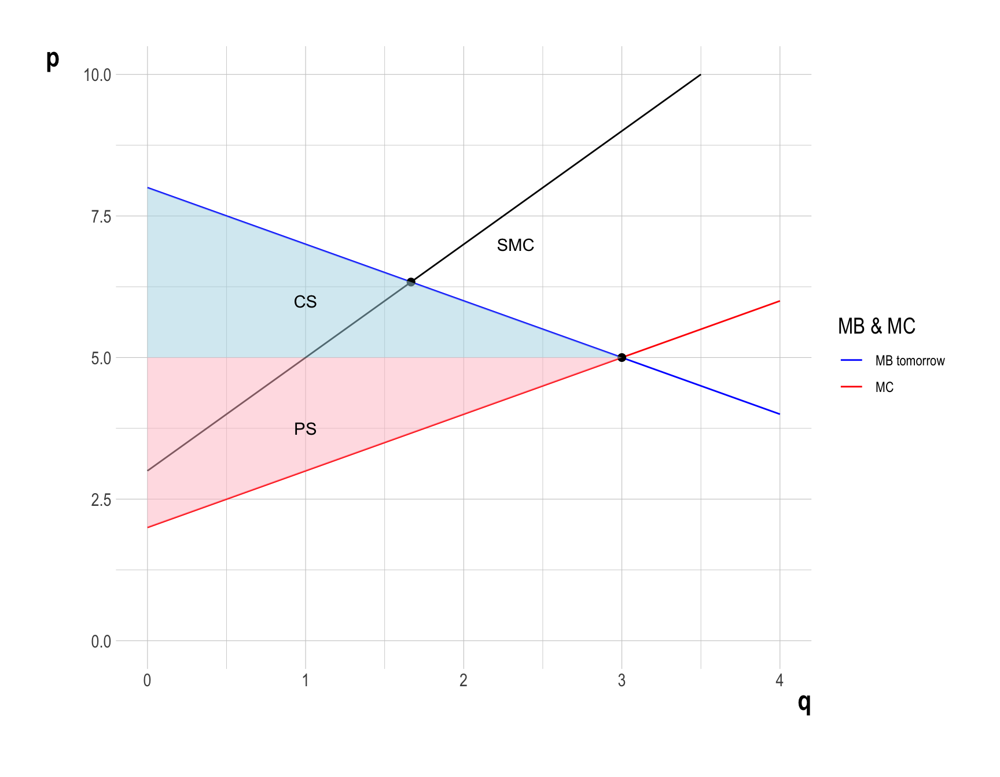
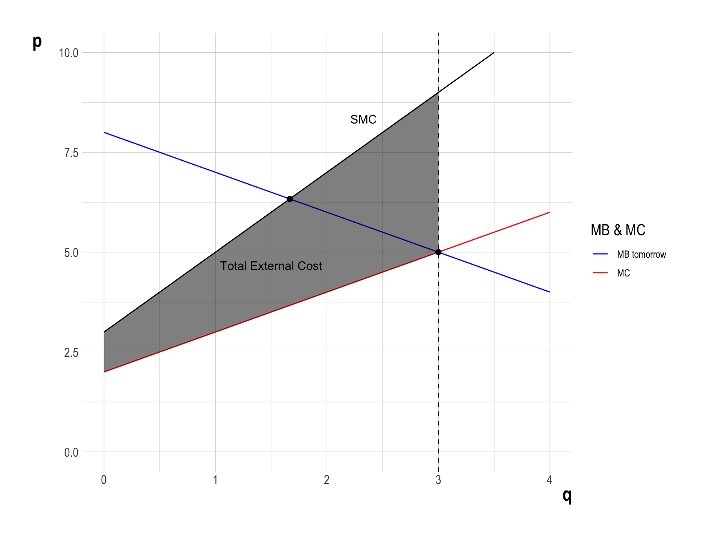
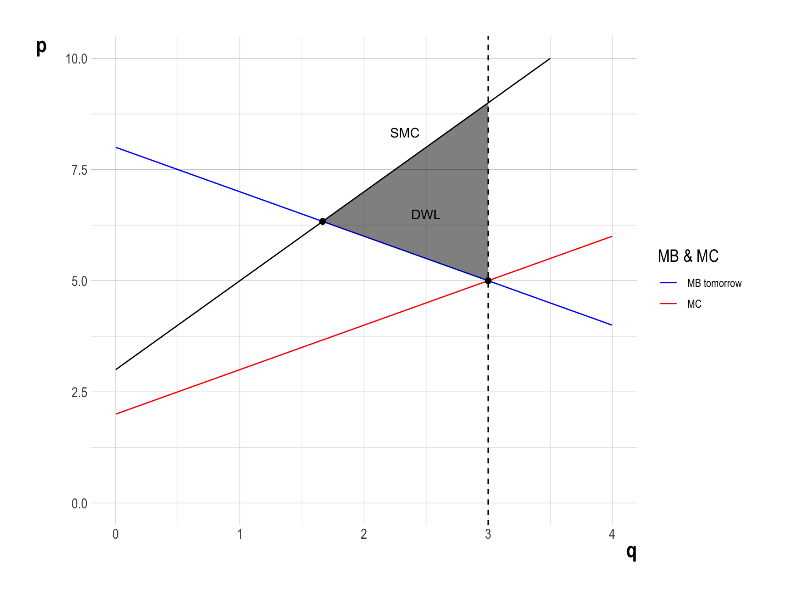
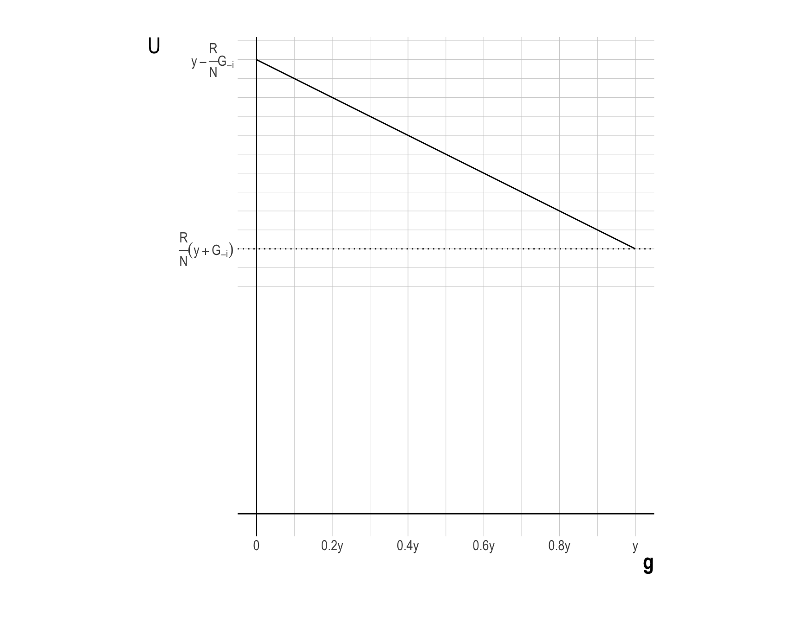
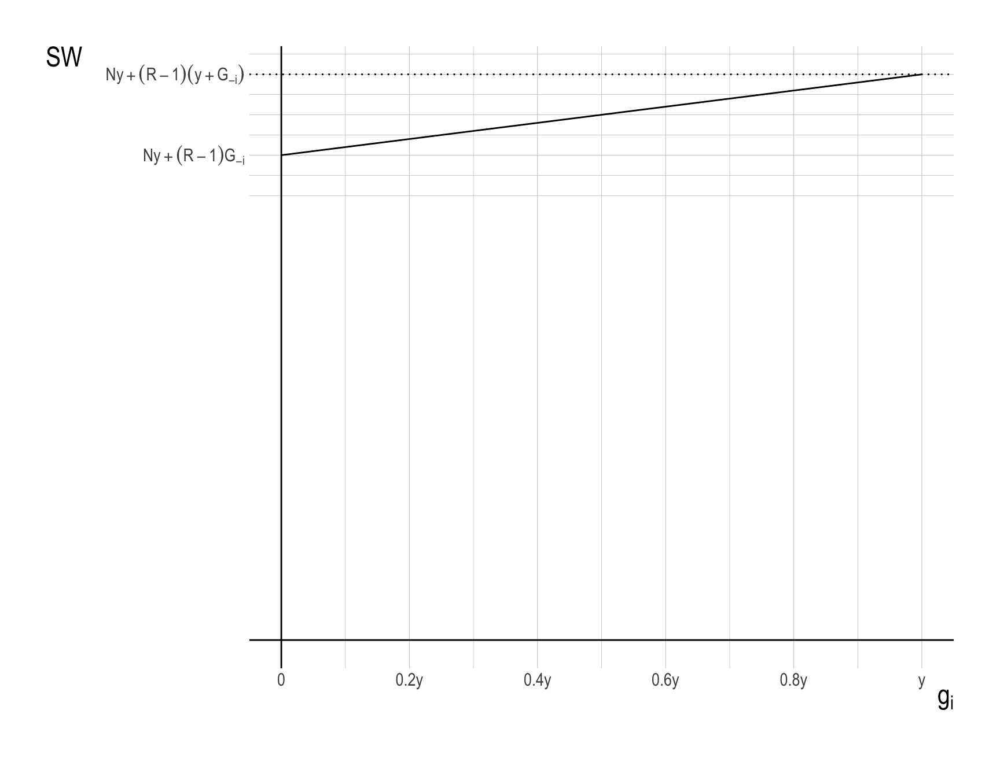

Homework 1 - Example Answer
Question 1. Externalities and Economic Development
The demand function for oil is \(q_d = 4 - p\), and the supply function is \(q_s = p - 2\), where \(p\) is the price of oil per barrel, and \(q\) is the quantity of oil in millions of barrels per day. Using this information, solve the following problems:
a
Graph the supply and demand functions on the same coordinate plane.
Answer
b
Determine the market equilibrium price and quantity of oil.
Answer - At the market equilibrium, the following holds: - Utility/Profit Maximization: a consumer maximizes utility; a firm maximizes profit (a firm’s version of utility). - Market Clearing: a price is such that a quantity demanded is equal to a quantity supplied.
- Solving the system of demand and supply equations gives the equilibrium level of quantity (\(q^{*}\)) and price (\(p^{*}\)): \[ \begin{align} MB(q^{*}) =\; &p^{*} = MC(q^{*})\\ 4 - q^{*} =\; &q^{*} + 2\\ \quad\\ \therefore\quad \left\{\begin{matrix} q^{*} = 1 \\ p^{*} = 3 \end{matrix}\right. \end{align} \]
c
Calculate the consumer surplus and producer surplus at the market equilibrium.
Answer
- Consumer surplus (\(CS\)) is the value that consumers receive from an allocation minus what it costs them to obtain it.
- \(CS\) is measured as the area under the demand curve minus the consumer cost.
- Producer surplus (\(PS\)) is the value that producers receive from an allocation minus what it costs them to supply it.
- \(PS\) is measured as the area above the supply curve and below the market price line.
- Therefore, \(CS = \frac{1}{2}\) and \(PS = \frac{1}{2}\).

d
Oil consumption causes environmental damage. Suppose the marginal damage of oil pollution is given by \(MD = q + 1\). Calculate:
(2) The deadweight loss (\(DWL\)) due to pollution at the market equilibrium
- Deadweight loss (\(DWL\)) is the loss of economic efficiency that occurs when the optimal or equilibrium outcome is not achieved in a market.
- What will happen if the firm produces at \(q^{*}\), instead of \(q^{o}\)?
- The total economic surplus (\(TES = CS + PS\)) is the same as in question (c).
- What will happen if the firm produces at \(q^{*}\), instead of \(q^{o}\)?

- However, pollution imposes a total external cost on society.
- This external cost is measured by the vertical distance between the Social Marginal Cost (\(SMC\)) and the private Marginal Cost (\(MC\)) up to the production level \(q^{*} = 1\).
- Note that \(MD = SMC - MC\).
- Imagine building up the total external cost unit by unit. For each unit of oil production, you add its marginal damage to society. The sum of all these marginal damage gives you the total external cost. Graphically, this summation is represented by the vertical distance between \(SMC\) and \(MC\).

- Therefore, \(DWL\) can be calculated as the difference between the total economic surplus and the total external cost in the economy: \[ \begin{align} DWL &= \frac{1}{2}\times\left(1 - \frac{1}{3}\right)\times\left(5 - 3\right)\\ &= \frac{2}{3} \end{align} \]

e
Due to economic development, the future demand for oil increases, resulting in a new demand function \(q_d' = 8 - p\). Determine (1) the new market equilibrium price and quantity, (2) the new socially optimal level of oil use, and (3) the \(DWL\) due to pollution at the market equilibrium in the future.
(1) The new market equilibrium price and quantity
Answer In the equilibrium, the price is such that the market clears:
\[ 8 - q^{**} = q^{**} + 2 \] Therefore, the new equilibrium quantity is \(q^{**} = 3\), and the new equilibrium price is \(p^{**}=5\).
(3) The \(DWL\) due to pollution at the market equilibrium in the future
- Deadweight loss (\(DWL\)) is the loss of economic efficiency that occurs when the optimal or equilibrium outcome is not achieved in a market.
- What will happen if the firm produces at \(q^{**}\), instead of \(q^{oo}\)?
- The total economic surplus (\(TES = CS + PS\)) is described as below.
- What will happen if the firm produces at \(q^{**}\), instead of \(q^{oo}\)?

- However, producing at \(q^{**} = 3\) creates the total external cost, the vertical distance between \(SMC\) and \(MC\)

- Therefore \(DWL\) can be calculated as the difference between the total surplus and the total external cost in the market: \[ \begin{align} DWL &= \frac{1}{2}\times\left(3 - \frac{5}{3}\right)\times\left(9 - 5\right)\\ &= \frac{8}{3} \end{align} \]

f
Propose and briefly explain two distinct public policies that could be implemented to mitigate the environmental damages and reduce the burden on future generations. Discuss the potential effectiveness and challenges of each policy.
Answer
Government can implement the two market-based policy instruments. This lecture slide explains these policy instruments.
Besides, government can invest in renewable energy by providing direct funding for clean energy projects (solar, wind, etc.)
- Policy: Provide direct funding for clean energy projects (solar, wind, etc.)
- Benefits:
- Directly reduces emissions through cleaner energy production
- Stimulates job creation in the green energy sector
- Decreases dependence on fossil fuels
- Challenges:
- High upfront costs with potential impact on government budgets
- Overcoming existing fossil fuel infrastructure lock-in
- Resistance from the established fossil fuel industry
- Ensuring efficient allocation of resources across various projects
- Long-term Impact: Accelerates transition to a low-carbon economy, potentially reducing future environmental mitigation costs.
g
Suppose the government decides to impose a Pigouvian tax to internalize the external costs of oil pollution. Calculate the optimal tax rates in the present and in the future and explain how it would affect the market equilibrium and social welfare.
Answer
- Corrective Taxation (Pigouvian Tax) for Oil Production:
- To address the negative externality imposed by oil production, we are considering implementing a price instrument known as corrective taxation, or Pigouvian tax. This policy involves setting a per-unit tax equal to the marginal environmental damage caused by oil production.
\[ \begin{align} \text{Present}:&\quad t^{o} = MD(q^{o}) = q^{o} + 1\\ \text{Future}:&\quad t^{oo} = MD(q^{oo}) = q^{oo} + 1 \end{align} \] - Therefore, the Pigouvian tax rate in the present is \(t^{o} = \frac{4}{3}\), and the Pigouvian tax in the future is \(t^{oo} = \frac{8}{3}\).
The aim is to internalize the external costs, aligning private costs with social costs (Under this Pigouvian tax scheme, the \(SMC\) curve becomes the firm’s private marginal cost).
Effect on Market Equilibrium and Social Welfare:
The implementation of a Pigouvian tax would significantly alter the market equilibrium. The supply curve would shift upward by the amount of the tax, resulting in a new equilibrium with a higher price and lower quantity. Producers would bear part of the tax burden, reducing their producer surplus, while consumers would face higher prices, diminishing their consumer surplus.
In terms of social welfare, the deadweight loss from the negative externality disappears as production moves to the socially optimal level. The social welfare increases to the optimal level as environmental costs are internalized.
- From an economic efficiency standpoint, the tax would encourage more efficient use of resources by incorporating environmental costs into market prices. This promotes an allocation of resources that better reflects true social costs and benefits.
Additionally, the revenue generated from the tax could potentially be used for environmental mitigation efforts or to offset other taxes, further influencing overall social welfare.
Question 2. Provision of Public Goods
A community lives near a forest. The forest provides wood, which the villagers can use for various purposes like heating, building, or selling. However, the forest also acts as a carbon sink, absorbing carbon dioxide and providing fresh air, and is home to various wildlife. If too many trees are cut down, the forest will degrade, leading to loss of these environmental benefits.
There are \(N\) number of identical villagers. Each villager is endowed with \(\$y\), and must decide how much of their endowment to invest in a communal fund for forest conservation and how much to keep for themselves. Let \(g_{i}\) denote each villager’s contribution to the communal fund.
The total amount of dollars in the communial fund is multiplied by some constant factor \(R\), where \(1 < R < N\). The multiplied amount is then equally distributed among all villagers, irrespective of their individual contributions.
Each villager \(i\)’s utility is as follows: \[ \begin{align} U_{i} &= y - g_{i} + \frac{R}{N} \times G\\ &= y - g_{i} + \frac{R}{N} \times \left(\, g_{i} + G_{-i} \,\right), \end{align} \] where \(G\) is the total amount of dollars collected for the communial fund, and \(G_{-i} = G - g_{i}\).
a
Using calculus and graph, determine the equilibrium contribution (\(g_{i}^{*}\)) for each villager.
Answer
In the equilibrium, each villager \(i\) maximizes his or her utility by choosing \(g_{i}\):
\[ \begin{align} \max_{0\leq\, q_{i}\leq y}\;U_{i} &= y - g_{i} + \frac{R}{N} \times G\tag{villager-i}\\ &= y - g_{i} + \frac{R}{N} \times \left(\, g_{i} + G_{-i} \,\right) \end{align} \] The first order condition to problem (villager-i) is:
\[ \begin{align} \frac{dU_{i}}{dg_{i}} \,=\, -1 + \frac{R}{N} \, < \, 0.\tag{FOC-i} \end{align} \] (FOC-i) implies that the marginal utility of increasing one unit of \(g_{i}\) is always negative. Since all villagers are identical, \(g_{i}^{*} = 0\) for all \(i=1,\cdots, N\).
- The utility function \(U_{i}\) of villager \(i\), in relation to their contribution \(g_{i}\), can be graphically represented as follows, holding all other villagers’ contributions remain constant:

b
The forest manager, who is external to the community, aims to maximize the community’s social welfare (\(SW\)). Note that the social welfare is the sum of the individual villager’s utility. Calculate the socially optimal level of \(g_i\) that maximizes \(SW\). How does this differ from the equilibrium contribution?
\[ \begin{align} SW &= U_{1} + U_{2} + \cdots + U_{N}\\ &= N \times U_{i}\qquad\text{ for any villager }\; i = 1, 2, \cdots, N\\ &= N \times \left(\,y - g_{i} + \frac{R}{N} \times G\,\right) \\ &= Ny +( R - 1 )\times G\\ &= Ny +( R - 1 )\times (G_{-i} + g_{i})\\ &= Ny +( R - 1 )\times (g_{1} + g_{2} + \cdots + g_{N}) \end{align} \]
Answer
- The forest manager aims to maximize the community’s social welfare (\(SW\)) by optimally allocating the total contributions from all villagers:
\[ \begin{align} \max_{g_{1}, g_{2}, \cdots, g_{N}}\, SW = Ny +( R - 1 )\times (g_{1} + g_{2} + \cdots + g_{N})\tag{manager} \end{align} \]
The first-order condition for problem (manager) is:
\[ \begin{align} \frac{\partial U_{i}}{\partial g_{i}} \,=\, R - 1 \, > \, 0 \quad\text{for all }i = 1,\cdots, N.\tag{FOC-manager-i} \end{align} \]
The first-order condition (FOC-manager-i) implies that the marginal social welfare of increasing villager \(i\)’s contribution is always positive. Since all villagers are identical, \(g_{i}^{o} = y\) for all \(i=1,\cdots, N\).
The social welfare function \(SW\), in relation to a villager \(i\)’s contribution \(g_{i}\), can be graphically represented as follows, holding all other villagers’ contributions remain constant:

c
The forest manager decides to implement a matching grant program to encourage contributions to the forest conservation fund. For every dollar contributed by a villager, the program will contribute an additional \(m\) dollars (where \(0 < m < 1\)). The utility function for each villager \(i\) now becomes: \[ \begin{align} U_{i}^{'} &= y - g_{i} + \frac{R}{N} \times (1 + m) \times G\\ &= y - g_{i} + \frac{R}{N} \times (1 + m) \times \left(\, g_{i} + G_{-i} \,\right), \end{align} \]
Determine the minimum value of \(m\) that would induce villagers to contribute the socially optimal level of \(g_i\) found in part (b). Show your work.
Answer
In the equilibrium under this program, each villager \(i\) maximizes his or her utility by choosing \(g_{i}\):
\[ \begin{align} \max_{0\leq\, q_{i}\leq y}\;U_{i}^{'} &= y - g_{i} + \frac{R}{N}\times (1 + m) \times G\tag{villager-i'}\\ &= y - g_{i} + \frac{R}{N}\times (1 + m) \times \left(\, g_{i} + G_{-i} \,\right) \end{align} \] The first order condition to problem (villager-i’) is:
\[ \begin{align} \frac{dU_{i}^{'}}{dg_{i}} \,=\, -1 + \frac{R}{N}\times(1+m)\,\geq\, 0 \tag{FOC-i'} \end{align} \]
- Note that the marginal utility of contribution under this program, \(\frac{dU_i}{dg_i}\), can range from 0 to a positive value, depending on \(m\). There exists a minimum value, \(m^{o}\), that incentivizes a villager \(i\) to contribute their entire endowment \(y\):
\[ \frac{dU_{i}^{'}}{dg_{i}} \,=\,-1 + \frac{R}{N}\times(1+m^{o}) = 0 \] Therefore, \(m^{o} = \frac{N}{R} - 1\).
d
Using the minimum value of \(m\) found in part (c), calculate the total cost of implementing the matching grant program to the forest manager. Assume all villagers contribute the socially optimal amount.
Answer
The minimized total cost of the matching grant program when everyone contributes \(y\) is:
\[ \text{Cost}^{o} \,=\, N \times m^{o} \times y \]
e
Calculate the change in social welfare (\(\Delta SW = SW^{'} - SW\)) with the introduction of the matching grant program. Compare this change to the cost of the program calculated in part (d). Is the change in \(SW\) greater than, equal to, or less than the cost of the program to the forest manager? Justify your answer analytically.
Answer
- The change in social welfare due to the program is:
\[ \begin{align} \Delta SW &= SW^{o'} - SW^{*} \\ &= \left(N \times \left(\,y - g_{i}^{o} + \frac{R}{N} \times (1+m^{o})\times G^{o}\,\right)\right) - \left(N \times \left(\,y - g_{i}^{*} + \frac{R}{N} \times G^{*}\,\right)\right) \\ &= \left(N \times \left(\,y - y + \frac{R}{N} \times (1+m^{o})\times Ny\,\right)\right) - \left(N \times \left(\,y - 0 + \frac{R}{N} \times 0\,\right)\right) \\ &= NR(1+m^{o})y - Ny\\ &= Ny(R(1+m^{o}) - 1)\\ &= Ny\left(R\left(1+\frac{N}{R} - 1\right) - 1\right)\quad \because\; m^{o} = \frac{N}{R} - 1\\ &= Ny\left(N - 1\right) \,>\, 0 \end{align} \] Therefore, \(\Delta SW > 0\).
Now let’s compare \(\Delta SW\) with the cost of the program: \[ \begin{align} \Delta SW - Cost^{o} &= Ny\left(N - 1\right) - Nm^{o}y\\ &= Ny(N-1-m^{o})\\ &= Ny\left( N - \frac{N}{R} \right)\quad \because\; 1 + m^{o} = \frac{N}{R}\\ &= N^{2}y\left(1 - \frac{1}{R}\right) \,>\, 0\quad \because\; R > 1\\ \end{align} \] Therefore, the increase in \(SW\) is greater than the minimzied cost of the program, justifying the action of the program!
f
Discuss the practical implications and potential challenges of implementing such a matching grant program in the context of community forest management.
Answer 1. Funding: Securing sustainable funding for the matching grant program could be challenging, especially in resource-constrained environments.
Equity concerns: The program might disproportionately benefit wealthier villagers who can afford larger contributions.
Long-term sustainability: There’s a risk of creating dependency on the matching grants, potentially reducing intrinsic motivation for conservation.
Administrative costs: Implementing and monitoring the program would require resources and could be complex in a village setting.
Potential for strategic behavior: Villagers might coordinate to maximize the matching funds, which could lead to inefficiencies.
Calibration: Determining the optimal matching rate m in practice could be difficult and may need to be adjusted over time.
Spillover effects: The program might have positive externalities by fostering a culture of conservation and community cooperation.
This analysis demonstrates how a matching grant can theoretically solve the free-rider problem, but also highlights the practical challenges in implementing such a program. It underscores the complexity of designing effective policies for managing common pool resources like forests.